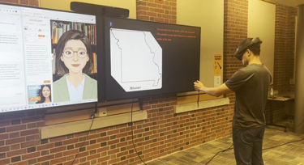
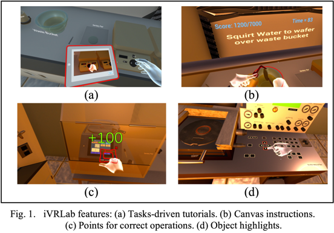

AI & learner agency
Exploring how generative AI can support reflection, questioning, practice, and meaningful learner choice.
Learning technology researcher · Educator · Designer
I study how artificial intelligence and immersive technologies can make STEM learning more engaging, equitable, and human.

Based in Columbia, Missouri
Ph.D. student at Mizzou
AI literacy · Extended reality · Human-centered learning design
From a science classroom to the wider world, my work is guided by one question:
How can technology help more people experience the joy and agency of learning?
01 · Research
Exploring how generative AI can support reflection, questioning, practice, and meaningful learner choice.
Designing and studying VR, MR, and AR experiences that connect embodied action with complex STEM ideas.
Creating inclusive learning environments through co-design, usability research, and iterative evaluation.
02 · Selected projects

Mixed reality + GenAILearning U.S. geography by tracing, moving, asking, and exploring.
A mixed-reality and generative AI environment designed to help international students build spatial knowledge through embodied interaction.
View publication
A cleanroom learners can enter from anywhere.
Immersive photolithography training that builds microelectronics self-efficacy through guided, hands-on practice.
View publication
Practice the conversation, not just the procedure.
An AI-supported virtual patient system providing scalable, immersive clinical encounters for preservice nurses.
View publicationLearning to question, evaluate, reflect, and act with AI.
This research examines how purposeful question-asking, design thinking, and reflective learning can help people use AI critically while retaining ownership of their decisions.
View publication03 · Selected publications
Peer-reviewed work spanning immersive learning, AI-supported simulation, and learner experience.
2026
Bueno-Vesga, J. A., Xu, X., Gu, Y., He, H., Li, S., & Duan, Y.
IEEE Transactions on Visualization and Computer Graphics
2026
Duan, Y., Xu, X., He, H., Gu, Y., Li, S., & Bueno-Vesga, J.
IEEE AIxVR · Best Paper Nominee
2026
He, H., Xu, X., Li, S., Bueno-Vesga, J. A., Duan, Y., & Gu, Y.
International Journal of Educational Technology in Higher Education
2025
Duan, Y., Xu, X., He, H., Li, S., & Gu, Y.
Journal of Interactive Learning Research, 36(1), 83–100
04 · Teaching & leadership
My teaching philosophy is grounded in three verbs: listen, learn, liberate. Listen to learners, improve through evidence, and help people become autonomous thinkers.
Research Assistant · Ph.D. Student
Academic Dean · Curriculum Director · Science Teacher
School Leader · Science Education Director · Biology Teacher
A learner first
Before beginning doctoral study, I spent sixteen years teaching science and leading schools. That experience keeps my research grounded in the realities of educators and learners.
Beyond academia, I translate science books, write popular science, and have designed and hosted science programs for China Central Television.
More about my journeyLet’s connect